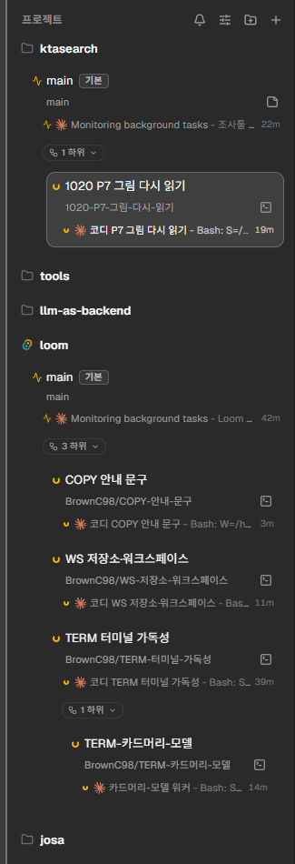

/mnt/c/Users/me/work/app: 데몬이 보는 파일 시스템에 없다.
데몬이 도는 기계의 경로를 적는다. 개발 컨테이너의 데몬은 compose.yaml이 넣은 폴더만 본다.
<워크스페이스 폴더>/<저장소 이름>/<브랜치 마지막 마디>. 만들 폴더를 창 아래에 미리 보인다.만들 폴더: /home/me/loom/workspaces/loom/TERM-터미널-가독성
git worktree list 순서로 나란히 놓는다. 첫째가 원래 체크아웃이다. 묶음마다 [정렬] [새 노드]가 있다.running 노드가 있으면 이유를 창에 보이고 닫지 않는다.loom spawn --worktree <브랜치>로 만든 자식은 새 묶음에 뜨고, 부모와 간선으로 잇는다.폴더 /home/me/loom/workspaces/loom/TERM-터미널-가독성를 지운다. 브랜치 BrownC98/TERM-터미널-가독성은 남는다.
닫지 않았다: running 노드가 1개 있다.
#settings/workspace)을 더한다. Orca는 「일반 > 워크스페이스」에 둔다. loom에는 「일반」 탭이 없어 같은 이름의 탭으로 둔다.~/loom/workspaces다(Orca 기본값 ~/orca/workspaces와 같은 모양). 입력에서 나가거나 Enter를 누르면 저장한다. 상대 경로는 거절한다.새 워크트리를 만드는 곳을 정한다.
/home/me/loom/workspaces/loom/TERM-터미널-가독성

| 항목 | Orca | loom |
|---|---|---|
| 폴더 설정 | General > Workspace > 「Workspace Directory」(워크스페이스 디렉터리) + [Browse]. 「Root directory where workspace folders are created.」 | 「워크스페이스」 탭, 글 입력만 |
| 기본값 | <홈>/orca/workspaces | <홈>/loom/workspaces |
| 폴더 배치 | 「Nest Workspaces」 켜짐(기본): <폴더>/<저장소>/<이름> | 늘 중첩 |
| 브랜치 | <접두어>/<이름>, 접두어 기본 git 사용자 이름 | 사람이 브랜치 이름 전체를 적는다. 폴더는 마지막 마디 |
| 저장소 추가 | 폴더 경로, git 저장소, 「Project already added」 | 같다. 이미 있으면 그 저장소를 고른다 |
| 워크트리 지우기 | git worktree remove --force, 선택하면 브랜치도 지움. 원래 체크아웃은 지우지 않음 | --force 없이 지우고 브랜치는 남긴다. 변경·running 노드가 있으면 거절 |